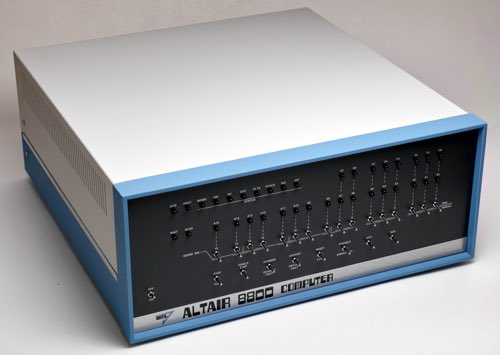
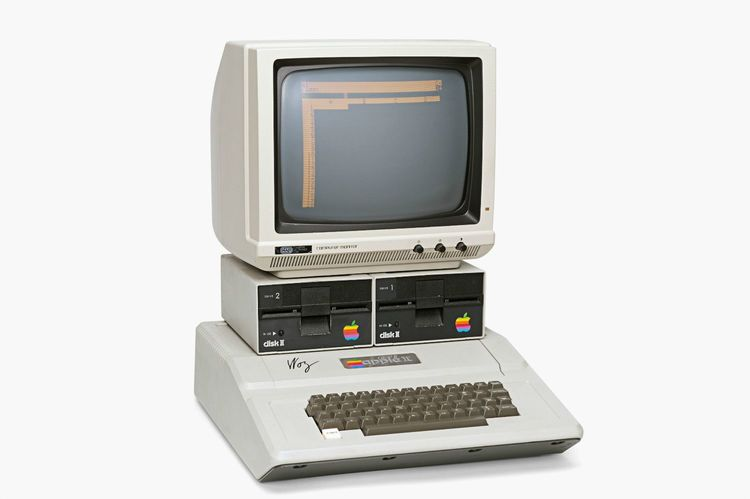
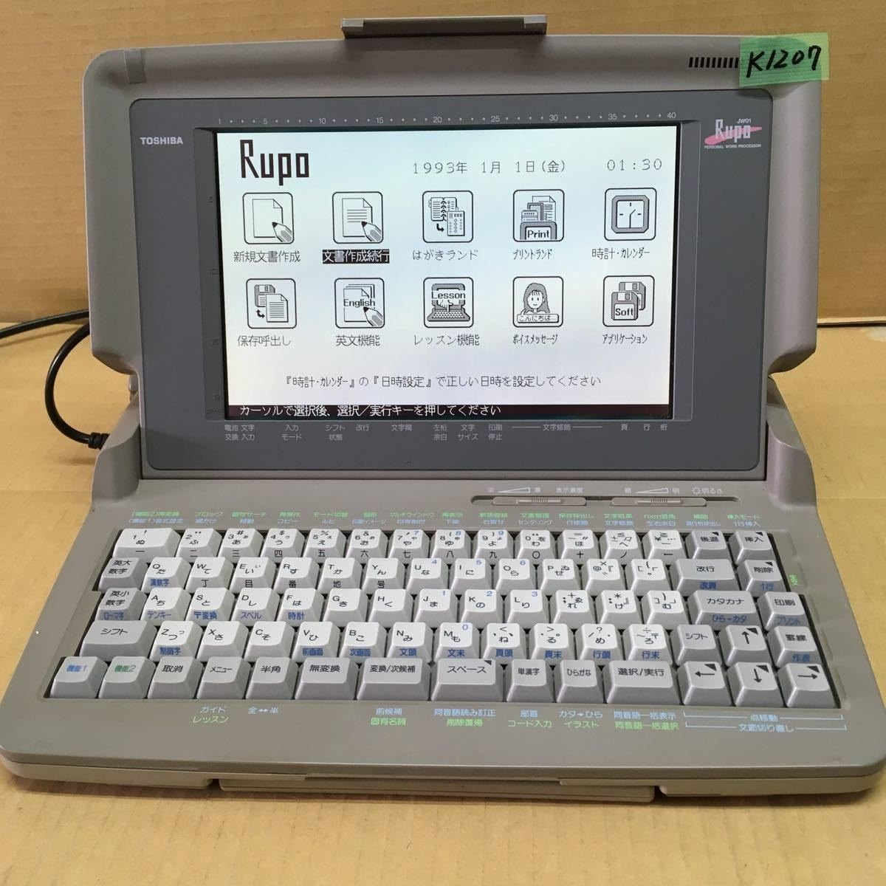
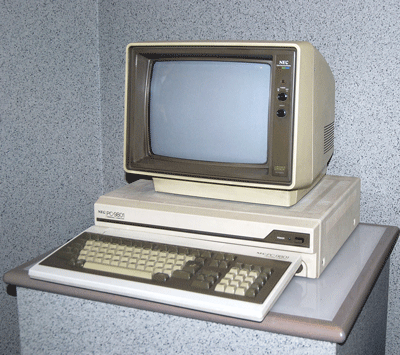
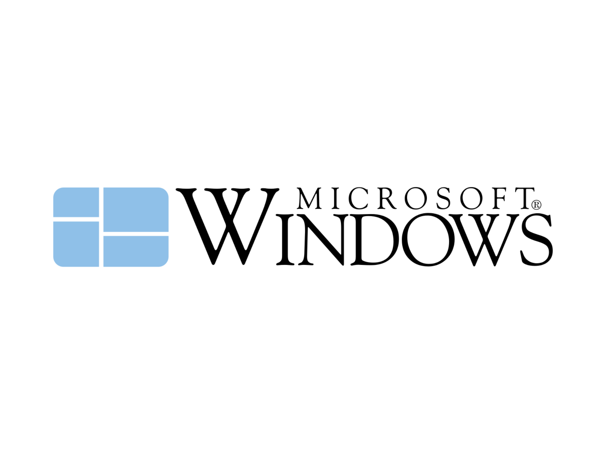
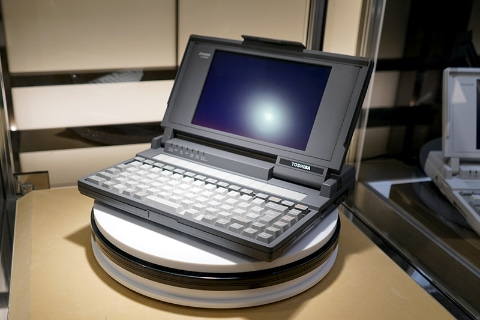
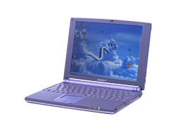
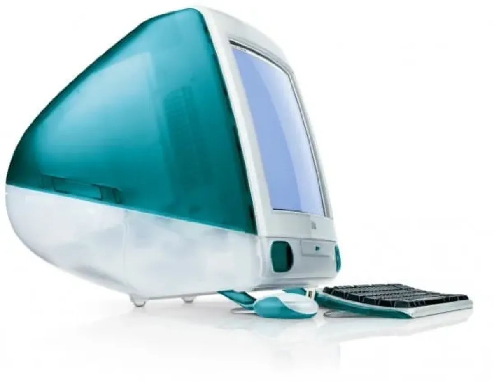
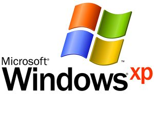

中間課題
PCの歴史
気になる企業
気になったニュース
自己紹介
パーソナルコンピュータの歴史
1975年
アメリカのMITS社より世界初のパソコンとされているAltair8800が発売

1977年
精工舎（現在のセイコー株式会社）が国産初のマイクロコンピュータを発売
アップル社より「AppleⅡ」が発売され、世界初のベストセラーとなる

1978年
東芝から日本語ワープロ「JW-01」が発売される。それを機にシャープや日立、NECなどから より安価なパーソナルコンピュータが発売された

1982年
NECから「PC-9801」が発売される。このパソコンは従来のアメリカ製のものとは異なり、 日本語入力に長けた仕様であったため日本で爆発的にヒットした。

1985年
マイクロソフト社から、現在でも広く使用されているwindowsが登場し、 ほかの企業が開発したパソコンであっても同様の操作で動かすことができるようになった。また、 従来の難しいコマンド操作ではなく、マウスを使った直感的な操作が可能になり、パソコンの歴史 に大きな変化をもたらした。

1989年
東芝が世界初のノートパソコンであるダイナブックを発売した。デスクトップ型のパソコン が主流だった当時にA4サイズかつ、2.7kgという軽量化を果たし世界を驚かせた。

1992年
DOS/VというOSを使用したパソコンが登場した。これまでのパソコンには日本語表示がなかっ たがこのDOS/Vパソコンはキーボードの入力やファイルの保存などを日本語で処理できるようになった
1997年
SONYより「バイオノート505」が発売された。スタイリッシュなデザインが特徴のこのパソコンは、 現在の薄型のノートパソコンの先駆けといわれている。

1998年
アップルが一体型デスクトップ「iMac G3」を発売する。値段の安さやその革新的な デザインから話題を呼び、パソコンをよりカジュアルで身近なものに変化させた。

2001年
マイクロソフト社からWindows XPが発表された。それまではデスクトップパソコン が主流であったがノートパソコンが主流の時代へと変化した。
